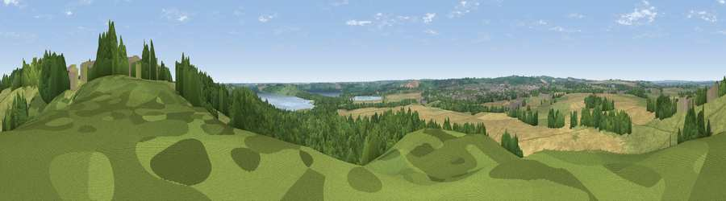

Viewpoint near Burley on the Hill
#36852 in England · top 62% of its area beats it · near Burley on the HillWhere it is
The exact computed spot (SK 88175 10125). Click the marker for map links.
The view, rendered

A 360° render of this exact spot computed from the terrain model, tree cover and land cover — summer colours, afternoon light, calibrated against photographs of famous viewpoints. Real trees, hedges and buildings will differ in detail.
The panorama
Grey silhouette: terrain skyline in each direction (720 bearings, Earth curvature and refraction included). Dashed green: skyline with trees (+15 m) and buildings (+8 m) as obstacles. Blue strip: how far the ground is visible on each bearing.
Where the view opens
Wedge length = distance to the farthest visible ground on that bearing (vegetation-aware). Rings at 10, 25 and 50 km.
What fills the view
33% woodland · 31% grassland · 29% cropland · 3% water · 2% built-up
Angular shares of the visible panorama (visual magnitude), not map area. Landscape diversity 0.56 (0–1 Shannon).
Key numbers
More beautiful places nearby
The staircase of upgrades: each row has a higher view potential than everything closer. Driving times are estimates from straight-line distance, calibrated against real road routing — check an actual route before setting out.
| Place | Direction | Drive | Score |
|---|---|---|---|
| Viewpoint near Egleton | SSW · 4 km | ~9 min | 38.7 |
| Viewpoint near Barleythorpe | W · 4 km | ~10 min | 40.0 |
| Cold Overton Park | WSW · 6 km | ~12 min | 41.1 |
| Ranksborough Hill | WNW · 6 km | ~13 min | 47.0 |
| Viewpoint near Pickwell | WNW · 11 km | ~21 min | 57.3 |
| Viewpoint near Burrough on the Hill | WNW · 12 km | ~22 min | 63.4 |
| Viewpoint near Burrough on the Hill | W · 12 km | ~23 min | 66.0 |
| Viewpoint near Stathern | NNW · 23 km | ~38 min | 66.3 |
52.68166, -0.69714 · source: screening · position refined by local search. Computed location — check access rights before visiting.